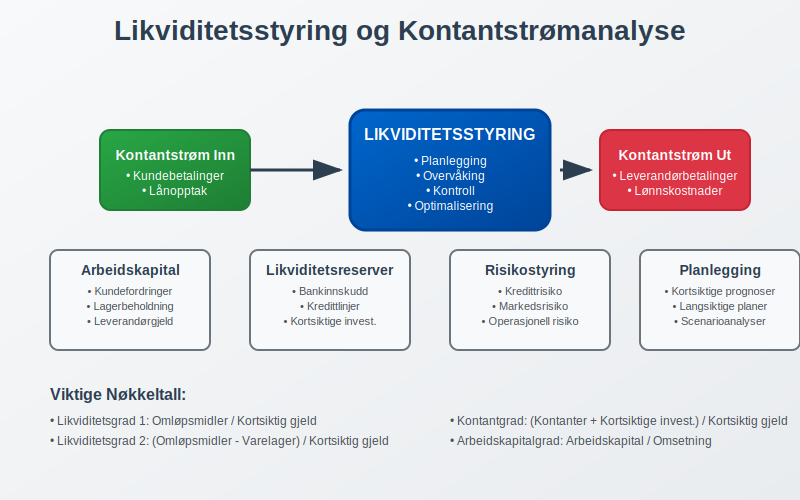
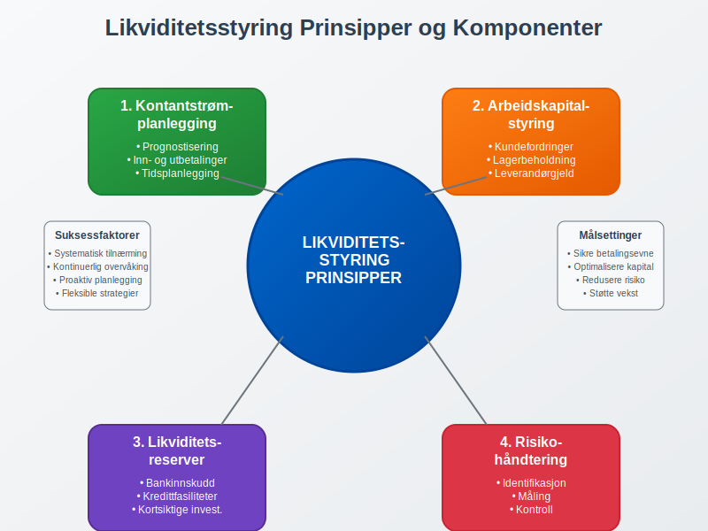
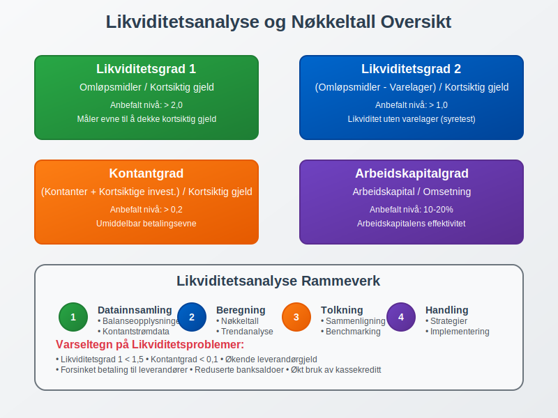
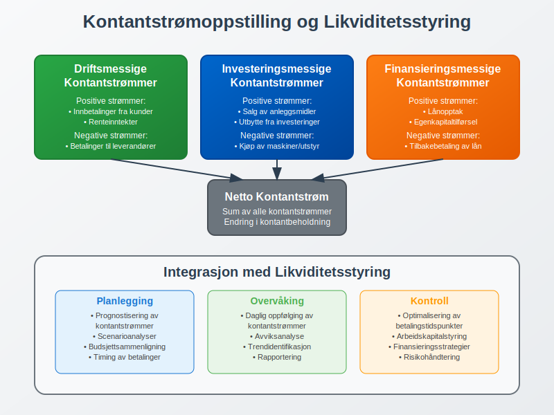
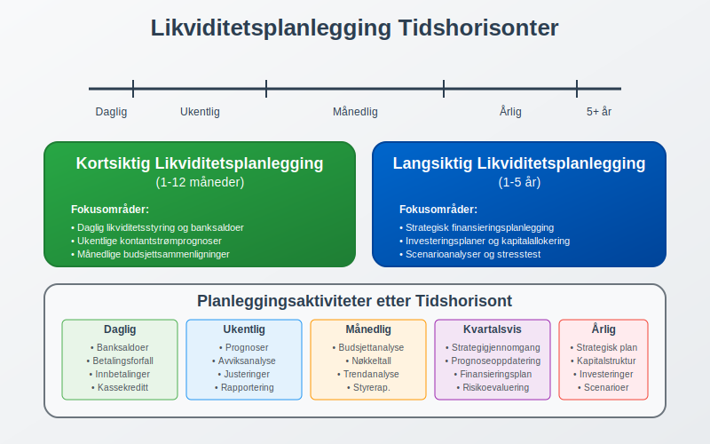
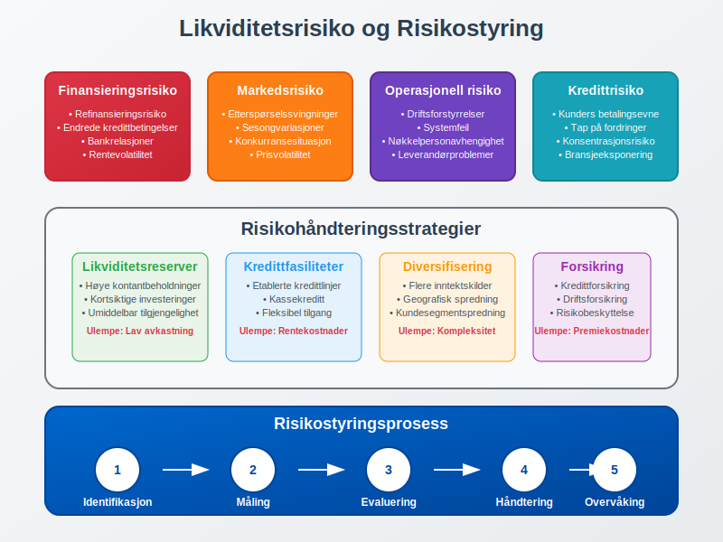
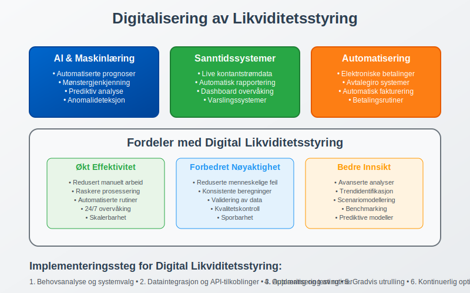
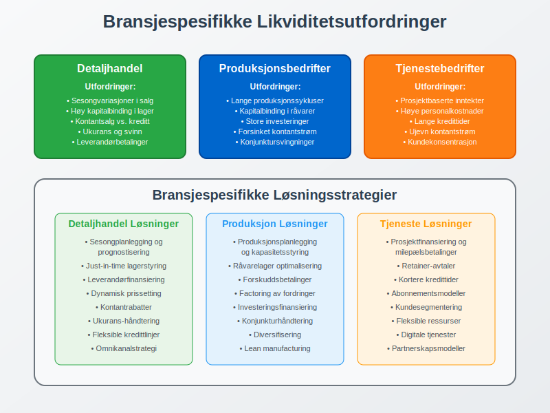
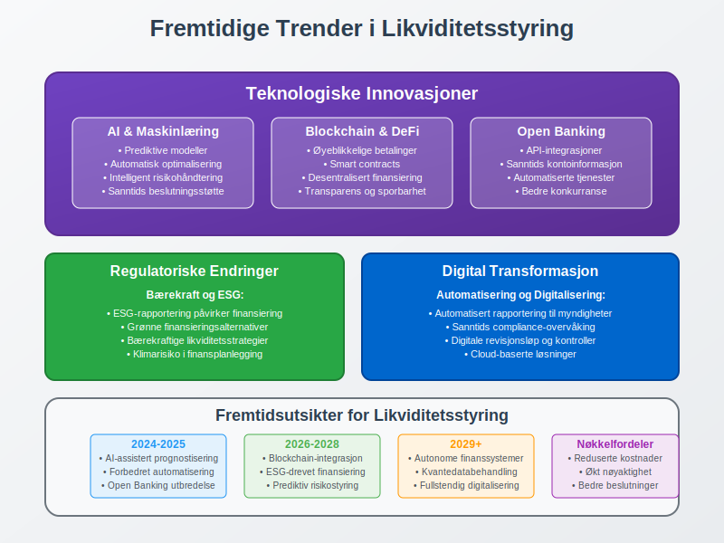

Likviditetsstyring er en kritisk del av finansiell ledelse som handler om å sikre at en bedrift har tilstrekkelig kontantbeholdning og tilgang til likvide midler for å møte sine kortsiktige forpliktelser. Som en sentral komponent i finansregnskap, involverer likviditetsstyring planlegging, overvåking og kontroll av kontantstrøm for å optimalisere bedriftens finansielle fleksibilitet. For norske bedrifter er effektiv likviditetsstyring essensielt for å opprettholde betalingsevne og sikre kontinuerlig drift i henhold til god regnskapsskikk.
For å planlegge bedriftens finansieringsbehov er det viktig å beregne kapitalbehov, som viser hvor mye kapital som kreves for drift og investeringer.

Grunnleggende Prinsipper for Likviditetsstyring
Likviditetsstyring bygger på flere fundamentale prinsipper som sikrer at bedriften kan møte sine finansielle forpliktelser når de forfaller. Disse prinsippene er tett knyttet til arbeidskapital og balansestyring.

1. Kontantstrømplanlegging
Kontantstrømplanlegging er kjernen i likviditetsstyring og innebærer systematisk prognostisering av inn- og utbetalinger over tid. Dette krever detaljert analyse av:
- Driftsmessige kontantstrømmer: Inntekter fra salg, betalinger til leverandører, lønnskostnader
- Investeringsmessige kontantstrømmer: Kjøp og salg av anleggsmidler
- Finansieringsmessige kontantstrømmer: Lånopptak, tilbakebetaling av gjeld, utbytte
2. Arbeidskapitalstyring
Effektiv styring av arbeidskapital er avgjørende for likviditetsstyring. Dette omfatter optimalisering av:
- Kundefordringer: Redusere kredittid og forbedre innkrevingsrutiner
- Lagerbeholdning: Minimere bundet kapital i varelager
- Leverandørgjeld: Optimalisere betalingstidspunkter
3. Likviditetsreserver
Opprettholde tilstrekkelige likviditetsreserver gjennom:
- Bankinnskudd: Kontanter på bankkontoer
- Kredittfasiliteter: Ubenyttede kredittlinjer og kassekreditt
- Kortsiktige investeringer: Likvide finansielle instrumenter
Likviditetsanalyse og Nøkkeltall
Systematisk likviditetsanalyse er fundamental for effektiv likviditetsstyring. Tabellen nedenfor viser de viktigste likviditetsnøkkeltallene og deres tolkninger:
| Nøkkeltall | Formel | Tolkning | Anbefalt Nivå |
|---|---|---|---|
| Likviditetsgrad 1 | Omløpsmidler / Kortsiktig gjeld | Evne til å dekke kortsiktig gjeld | > 2,0 |
| Likviditetsgrad 2 | (Omløpsmidler - Varelager) / Kortsiktig gjeld | Likviditet uten varelager | > 1,0 |
| Kontantgrad | (Kontanter + Kortsiktige investeringer) / Kortsiktig gjeld | Umiddelbar betalingsevne | > 0,2 |
| Arbeidskapitalgrad | Arbeidskapital / Omsetning | Arbeidskapitalens effektivitet | 10-20% |

Praktisk Eksempel: Likviditetsanalyse
La oss se på et konkret eksempel hvor en bedrift analyserer sin likviditetssituasjon:
Bedrift ABC - Balansetall (i tusen NOK):
- Omløpsmidler: 2.500
- Varelager: 800
- Kontanter og bankinnskudd: 400
- Kortsiktige investeringer: 200
- Kortsiktig gjeld: 1.200
Beregning av nøkkeltall:
- Likviditetsgrad 1: 2.500 / 1.200 = 2,08 (Tilfredsstillende)
- Likviditetsgrad 2: (2.500 - 800) / 1.200 = 1,42 (God)
- Kontantgrad: (400 + 200) / 1.200 = 0,50 (Meget god)
Kontantstrømoppstilling og Likviditetsstyring
Kontantstrømoppstilling er et sentralt verktøy i likviditetsstyring som gir detaljert oversikt over bedriftens kontantbevegelser. Oppstillingen deles inn i tre hovedkategorier:

Driftsmessige Kontantstrømmer
Kontantstrømmer fra den løpende driften er den viktigste kilden til likviditet for de fleste bedrifter:
- Positive strømmer: Innbetalinger fra kunder, renteinntekter
- Negative strømmer: Betalinger til leverandører, lønnskostnader, skatter
Investeringsmessige Kontantstrømmer
Kontantstrømmer knyttet til investeringer i og salg av langsiktige eiendeler:
- Negative strømmer: Kjøp av maskiner, utstyr, bygninger
- Positive strømmer: Salg av anleggsmidler, utbytte fra investeringer
Finansieringsmessige Kontantstrømmer
Kontantstrømmer fra finansieringsaktiviteter:
- Positive strømmer: Lånopptak, egenkapitaltilførsel
- Negative strømmer: Tilbakebetaling av lån, utbetaling av utbytte
Likviditetsplanlegging og Prognoser
Effektiv likviditetsplanlegging krever systematisk utarbeidelse av kontantstrømprognoser på kort og lang sikt. Dette innebærer detaljert planlegging av alle inn- og utbetalinger.
Kortsiktig Likviditetsplanlegging (1-12 måneder)
Kortsiktig planlegging fokuserer på operasjonelle kontantstrømmer og omfatter:
- Daglig likviditetsstyring: Overvåking av banksaldoer og betalingsforfall
- Ukentlige prognoser: Detaljerte prognoser for kommende uker
- Månedlige budsjetter: Sammenligning av faktiske og budsjetterte kontantstrømmer
Langsiktig Likviditetsplanlegging (1-5 år)
Langsiktig planlegging integreres med strategisk planlegging og omfatter:
- Investeringsplaner: Planlagte investeringer i anleggsmidler
- Finansieringsstrategier: Planlegging av fremtidig finansieringsbehov
- Scenarioanalyser: Analyse av ulike markedsscenarier og deres likviditetspåvirkning

Arbeidskapitalstyring som Likviditetsverktøy
Arbeidskapitalstyring er en av de mest effektive metodene for å forbedre likviditetssituasjonen. Dette innebærer optimalisering av alle komponenter i arbeidskapitalen.
Kundefordringsstyring
Effektiv styring av kundefordringer kan betydelig forbedre kontantstrømmen:
Strategier for forbedring:
- Kortere kredittider: Redusere standard betalingsfrist fra 30 til 14 dager
- Kontantrabatter: Tilby rabatt for rask betaling
- Effektiv inkasso: Systematisk oppfølging av forfalte fordringer
- Kredittvurdering: Grundig vurdering av nye kunders kredittverdighet
Lagerstyring
Optimalisering av lagerbeholdning frigjør bundet kapital:
Lageroptimaliseringsstrategier:
- Just-in-time levering: Redusere lagernivåer gjennom tettere leverandørsamarbeid
- ABC-analyse: Prioritere styring av høyverdige lagervarer
- Sesongplanlegging: Tilpasse lagernivåer til sesongvariasjoner
- Ukurans-håndtering: Regelmessig gjennomgang og avhending av ukurans lager
Leverandørgjeldsstyring
Strategisk styring av leverandørgjeld kan forbedre kontantstrømmen:
Optimaliseringsstrategier:
- Forhandling av betalingsbetingelser: Oppnå lengre kredittider
- Utnyttelse av kontantrabatter: Vurdere lønnsomheten av tidlig betaling
- Sentralisert betalingshåndtering: Optimalisere betalingstidspunkter
- Leverandørfinansiering: Utnytte leverandørenes finansieringstilbud
Likviditetsrisiko og Risikostyring
Likviditetsrisiko refererer til risikoen for at bedriften ikke kan møte sine kortsiktige forpliktelser når de forfaller. Effektiv risikostyring krever identifikasjon, måling og håndtering av ulike risikofaktorer.

Typer Likviditetsrisiko
1. Finansieringsrisiko
- Risiko for ikke å kunne refinansiere gjeld ved forfall
- Endringer i kredittbetingelser fra banker og finansinstitusjoner
2. Markedsrisiko
- Svingninger i kontantstrøm på grunn av markedsendringer
- Sesongvariasjoner i salg og innbetalinger
3. Operasjonell risiko
- Forstyrrelser i driften som påvirker kontantstrømmen
- Tap av store kunder eller leverandører
4. Kredittrisiko
- Kunders manglende betalingsevne
- Økning i tap på fordringer
Risikohåndteringsstrategier
Bedrifter kan implementere flere strategier for å håndtere likviditetsrisiko:
| Strategi | Beskrivelse | Fordeler | Ulemper |
|---|---|---|---|
| Likviditetsreserver | Opprettholde høye kontantbeholdninger | Høy sikkerhet | Lav avkastning |
| Kredittfasiliteter | Etablere kredittlinjer | Fleksibilitet | Rentekostnader |
| Diversifisering | Spre risiko på flere områder | Redusert samlet risiko | Kompleksitet |
| Forsikring | Forsikre mot spesifikke risikoer | Beskyttelse | Premiekostnader |
Teknologi og Digitalisering i Likviditetsstyring
Moderne teknologi har revolusjonert likviditetsstyring gjennom automatisering og sanntidsrapportering. ERP-systemer og spesialiserte likviditetsstyringsverktøy gir bedrifter kraftige verktøy for å optimalisere sin likviditetssituasjon.
Digitale Verktøy for Likviditetsstyring
1. Automatisert Kontantstrømprognose
- Sanntidsoppdatering av prognoser basert på faktiske transaksjoner
- Integrasjon med fakturasystemer og betalingsplattformer
- Maskinlæring for forbedret prognosenøyaktighet
2. Elektronisk Betalingshåndtering
- Avtalegiro for regelmessige betalinger
- Elektronisk fakturering for raskere innbetalinger
- Automatiserte betalingsrutiner
3. Sanntids Rapportering
- Dashboard med nøkkeltall og trender
- Varslingssystemer for kritiske likviditetsnivåer
- Integrerte rapporter for ledelsen

Regulatoriske Krav og Compliance
Norske bedrifter må overholde flere regulatoriske krav knyttet til likviditetsstyring og finansiell rapportering. Dette inkluderer krav fra bokføringsloven og regnskapsloven.
Rapporteringskrav
1. Kontantstrømoppstilling
- Obligatorisk for store foretak
- Må følge godkjente regnskapsstandarder
- Kvartalsvise rapporter for børsnoterte selskaper
2. Likviditetsrapportering
- Interne rapporter til styret
- Rapporter til långivere ved låneavtaler
- Spesielle krav for finansinstitusjoner
3. Dokumentasjon og Internkontroll
- Internkontroll for likviditetsstyring
- Dokumentasjon av prosedyrer og beslutninger
- Revisors gjennomgang av likviditetsstyring
Bransjespesifikke Utfordringer
Ulike bransjer har spesifikke utfordringer knyttet til likviditetsstyring som krever tilpassede strategier og løsninger.
Detaljhandel
Detaljhandel har unike likviditetsutfordringer:
- Sesongvariasjoner: Store svingninger i kontantstrøm
- Lagerstyring: Høy kapitalbinding i varelager
- Kontantsalg vs. kreditt: Balansering av salgsformer
Produksjonsbedrifter
Produksjonsbedrifter møter spesifikke utfordringer:
- Lange produksjonssykluser: Forsinket kontantstrøm
- Råvarelager: Stor kapitalbinding i råvarer og halvfabrikata
- Investeringssykluser: Store investeringer i maskiner og utstyr
Tjenestebedrifter
Tjenestebedrifter har andre likviditetsutfordringer:
- Prosjektbaserte inntekter: Ujevn kontantstrøm
- Personalkostnader: Høye faste kostnader
- Kredittid til kunder: Lange innkrevingsperioder

Beste Praksis for Likviditetsstyring
Implementering av beste praksis for likviditetsstyring sikrer optimal finansiell styring og reduserer risiko for likviditetsproblemer.
1. Etabler Robuste Systemer og Prosedyrer
Systemkrav:
- Integrerte regnskaps- og likviditetsstyringssystemer
- Automatiserte rapporteringsrutiner
- Backup-systemer og beredskapsplaner
Prosedyrekrav:
- Klare ansvarsforhold og myndighetslinjer
- Regelmessige gjennomganger og oppdateringer
- Dokumenterte prosedyrer for alle kritiske prosesser
2. Implementer Effektiv Overvåking og Kontroll
Overvåkingselementer:
- Daglig oppfølging av banksaldoer
- Ukentlige kontantstrømprognoser
- Månedlige analyser av nøkkeltall
Kontrollmekanismer:
- Grenseverdier for kritiske nøkkeltall
- Eskaleringsrutiner ved avvik
- Regelmessig testing av beredskapsplaner
3. Utvikle Beredskapsplaner
Beredskapsplanlegging:
- Identifikasjon av kritiske risikoscenarier
- Handlingsplaner for ulike krisesituasjoner
- Regelmessig testing og oppdatering av planer
Finansieringsalternativer:
- Etablerte kredittfasiliteter
- Kontakter med alternative finansieringskilder
- Planer for rask kapitaltilførsel
Fremtidige Trender i Likviditetsstyring
Likviditetsstyring utvikler seg kontinuerlig med nye teknologier og endrede markedsforhold. Flere trender vil påvirke hvordan bedrifter styrer sin likviditet fremover.
Teknologiske Innovasjoner
Kunstig intelligens og maskinlæring:
- Forbedrede prognoser basert på historiske data og markedstrender
- Automatisk identifikasjon av mønstre og anomalier
- Prediktiv analyse for risikohåndtering
Blockchain og digitale valutaer:
- Raskere og mer effektive betalingssystemer
- Reduserte transaksjonskostnader
- Nye former for kortsiktig finansiering
Open Banking:
- Bedre integrasjon mellom ulike finansielle tjenester
- Sanntids tilgang til kontoinformasjon
- Automatiserte likviditetsstyringsløsninger
Regulatoriske Endringer
Økt fokus på bærekraft:
- ESG-rapportering påvirker finansieringstilgang
- Grønne finansieringsalternativer
- Bærekraftige likviditetsstrategier
Digitalisering av regelverk:
- Automatisert rapportering til myndigheter
- Sanntids compliance-overvåking
- Digitale revisjonsløp

Konklusjon
Likviditetsstyring er en fundamental del av finansiell ledelse som krever systematisk tilnærming, robuste systemer og kontinuerlig overvåking. Effektiv likviditetsstyring sikrer ikke bare at bedriften kan møte sine kortsiktige forpliktelser, men optimaliserer også kapitalbruken og reduserer finansieringskostnadene.
For norske bedrifter er det essensielt å integrere likviditetsstyring med internregnskap og strategisk planlegging. Dette sikrer at likviditetsbeslutninger støtter bedriftens langsiktige mål samtidig som kortsiktig finansiell stabilitet opprettholdes.
Bedrifter som implementerer beste praksis for likviditetsstyring vil være bedre posisjonert for å:
- Håndtere markedsvolatilitet: Robust likviditetsstyring gir fleksibilitet i usikre tider
- Utnytte vekstmuligheter: Tilstrekkelig likviditet muliggjør rask respons på markedsmuligheter
- Redusere finansieringskostnader: Optimal likviditetsstyring minimerer behovet for dyr kortsiktig finansiering
- Styrke forhandlingsposisjon: God likviditetssituasjon forbedrer forhandlingsmakt med leverandører og finansinstitusjoner
Fremover vil teknologiske innovasjoner og regulatoriske endringer fortsette å forme likviditetsstyring. Bedrifter som investerer i moderne systemer og utvikler robuste prosedyrer vil ha betydelige konkurransefortrinn i det digitale økonomiske landskapet.